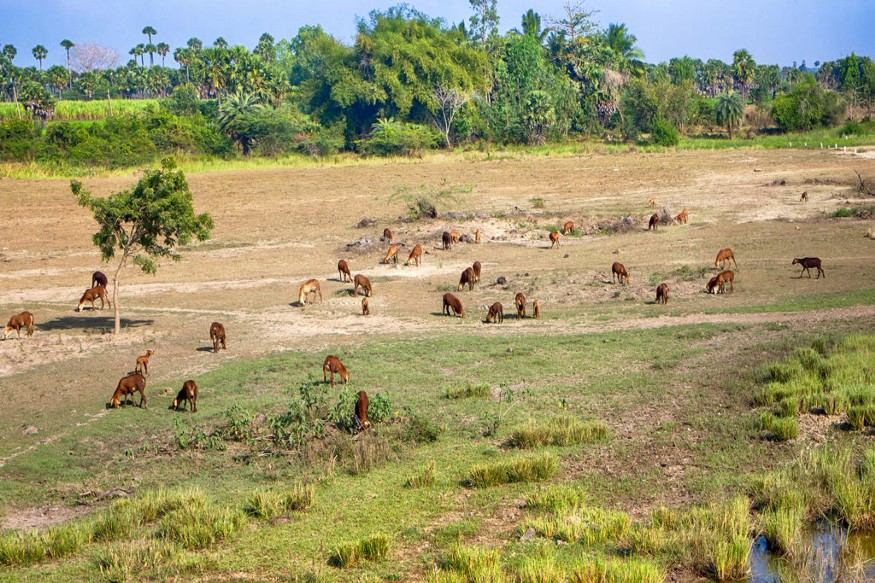
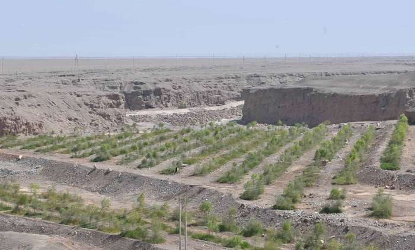

The immediate cause is the loss of most vegetation. This is driven by a number of factors, alone or in combination, such as drought, climatic shifts, tillage for agriculture, overgrazing and deforestation for fuel or construction materials. Vegetation plays a major role in determining the biological composition of the soil. Studies have shown that, in many environments, the rate of erosion and runoff decreases exponentially with increased vegetation cover. Unprotected, dry soil surfaces blow away with the wind or are washed away by flash floods, leaving infertile lower soil layers that bake in the sun and become an unproductive hard pan. Many scientists think that one of the most common causes is overgrazing, too much consumption of vegetation by cattle or other livestock.
Scientists agree that the existence of a desert in the place where the Sahara desert is now located is due to a natural climate cycle; this cycle often causes a lack of water in the area from time to time. There is a suggestion that the last time that the Sahara was converted from savannah to desert it was partially due to overgrazing by the cattle of the local population.Researchers from Hacettepe University have reported that Saharan soil may have bioavailable iron and also some essential macro and micro nutrient elements suitable for use as fertilizer for growing wheat. It has been shown that Saharan soil may have the potential of producing bio available iron when illuminated with visible light and also it has some essential macro and micro nutrient elements. In this study the impact of various growth media on development of some bread wheat and durum wheat cultivation have been investigated. As a four different nutrient media, Hewitt nutrient solution, illuminated and non-illuminated Saharan desert soil solutions and distilled water have been utilized. Shoot length (cm.seedling-1), leaf area (cm2 seedling-1) and photosynthetic pigments have been determined. The results of this study indicate that wheat varieties fed by irradiated Saharan soil solution gave comparable results to Hewitt nutrient solution.
Overpopulation is one of the most dangerous factors contributing to desertification. Human populations are increasing at exponential rates, which leads to overgrazing, over-farming and deforestation, as previously acceptable techniques are becoming less sustainable. Climate change is likely a major contributing factor in the desertification process, as simulations suggest the greenhouse effect may increase the spread of deserts by as much as 20%. There are multiple reasons farmers use intensive farming as opposed to extensive farming but the main reason is to maximize yields.By increasing productivity, they require a lot more fertilizer, pesticides, and labor to upkeep machinery. This continuous use of the land rapidly depletes the nutrients of the soil causing desertification to spread.